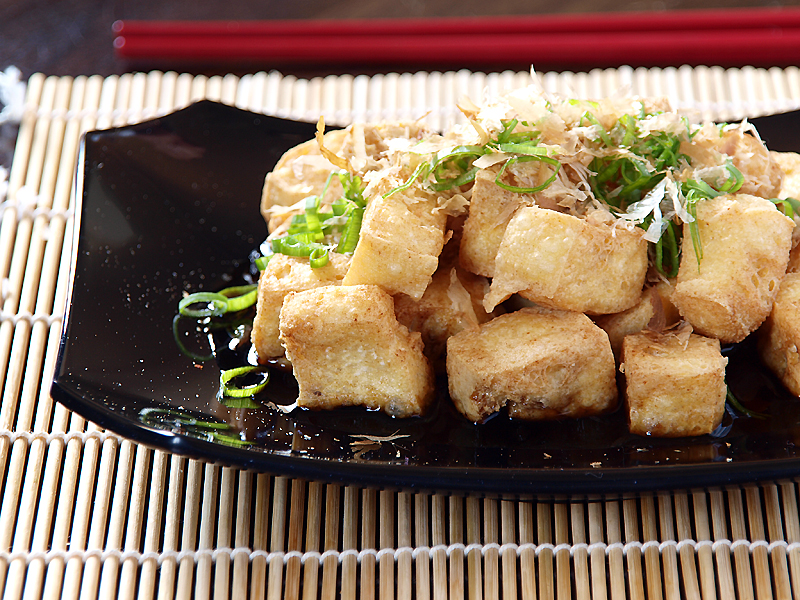

Air Fryer Tofu
Description
This recipe is for a easy and healthy dish of Tofu, made with some simple ingredients and air-fried.
It’s recommened that you freeze and thaw the tofu before making this recipe to improve the texture. It will also increase the absoption of your marinade.

Ingredients
- Extra-firm Tofu
- 2Tbsp Soy Sauce
- Olive Oil
- 1 Tbsp Sesame Oil
- Garlic
Steps
- Press the Tofu for atleast 15 minutes: It's important to remove excess moisture.
- Slice the Tofu: Keep the pieces evenly-sized for better results.
- Marinate the Tofu: dizzle with mixture of soy sauce (2Tbsp), sesame oil (1 Tbsp), Olive Oil (1 Tbsp), and garlic (1 clove, minced).
- Air Fry the Tofu: for 10-15 Minutes at 190°C (375°F).
Home